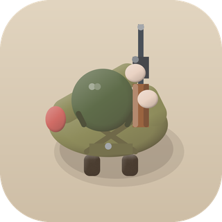

Hold the Bunker
Defend the command post. Top-down arcade action for iPhone and iPad.
Plays offline · No internet neededRequires iOS 17 or later · iPhone and iPad
Contact
Found a bug, stuck on a stage, or have an idea? Write to us and we'll get back to you.
It helps to mention your device (for example iPhone 16 or iPad Air) and its iOS version.
ContactQuestions
Which devices does it run on?
iPhone and iPad with iOS 17 or later (iPadOS 17 or later).
Do I need an internet connection?
No. The whole game plays offline, with no account. Game Center achievements and leaderboards are sent when you're online.
How do I play with a friend?
Each player uses their own iPhone or iPad with the game installed. Keep both devices on the same Wi‑Fi network, or close to each other with Wi‑Fi turned on. One player opens Multiplayer → Host and picks co-op or versus; the other opens Multiplayer → Join and chooses the game.
My friend's game doesn't show up
- Both devices need Local Network access for the game: Settings → Privacy & Security → Local Network → Hold the Bunker.
- Keep Wi‑Fi switched on for both devices. They can use the same Wi‑Fi network, or connect directly to each other when there's no network nearby.
- Both players need the same version of the game; update from the App Store if one is older.
What happens if a player's app closes during a match?
The game pauses for the other player. Open the app again within a minute and it rejoins the match.
Where are achievements and leaderboards?
They use Apple's Game Center. Sign in under Settings → Game Center. Anything you earn while signed out or offline is sent the next time you're signed in.
Is my progress saved?
Yes, on your device: stars, unlocked soldiers and maps, and settings. Deleting the app also deletes this progress.
How do I control my soldier?
Move with the pad on the left side of the screen and fire with the button on the right.
Are there ads or in-app purchases?
No.